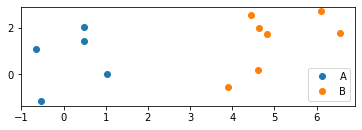
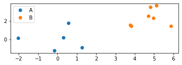

This evening Peter hosted a talk on NumPy, a python numeric processing package which runs on C under the hood.
Peter made a notebook accompanying this talk; check it out here! notebook
What’s this all about?
A low level intro to the use of numerical libraries (mainly Pytorch but also Numpy and Tensorflow) for machine learning.
Goal of this lecture
Get everyone familiar with the basics of array-manipulation.
Make sure even those people already familiar learn something new.
Introduce pytorch from the bottom-up.
Array libraries - what are they?
Libraries like Numpy, PyTorch, and Tensorflow use N-dimensional arrays as a basic datatype. They allow you to manipulate arrays much more compactily and faster than if you were to use native python. Behind the scenes, they do all the looping in C - which will typically be around 20-100x faster than doing it in python.
from timeit import timeitt1=timeit("sum(ai*bi for ai, bi in zip(a, b))", setup="import random; N=10000000; a=[random.gauss(0, 1) for _ in range(N)]; b=[random.gauss(0, 1) for _ in range(N)]", number =10)t2=timeit("(a*b).sum()", setup="import numpy as np; N=10000000; a, b = np.random.randn(2, N)", number =10)print(f"With python looping: t={t1:.3f}, with numpy looping: t={t2:.3f}. Speedup factor: {t1/t2:.0f}x")
With python looping: t=9.208, with numpy looping: t=0.352. Speedup factor: 26x
Example - 2 blobs of points
Lets create a random set of N (x, y) points “A” from a standard normal distribution, and another set of M (x, y) points “B” from a normal distribution centered around (x=3, y=2). Then join them into one big set of points C, and find the matrix of distances “D” between each pair of points.
The math described the same things as the code, but it came in 4 compact lines, vs 40 lines of code! Can’t we make the code more compact?
If only there was some way to compress things into a list so we could comprehend it more easily….
If only there was something like…
# List comprehensions!a = [[random.gauss(mu_a[d], 1) for d inrange(D)] for n inrange(N)]b = [[random.gauss(mu_b[d], 1) for d inrange(D)] for n inrange(M)]c = points_a + points_b # Note: Since these are lists, "+" means "concatenation"d = [[sum((cid-cjd)**2for cid, cjd inzip(ci, cj))**.5for ci in c] for cj in c]plot_everything(a, b, d)

Ok, that’s nice, but still…
That comprehension syntax is… difficult to parse.
d = [[sum((cid-cjd)**2 for cid, cjd in zip(ci, cj))**.5 for ci in c] for cj in c]
… doesn’t exactly roll of the tongue.
If only there were some more compact syntax for doing all these operations without the comprehension and looping…
If only there was something like …
# Numpy!import numpy as npa = np.random.randn(N, D) + mu_ab = np.random.randn(M, D) + mu_bc = np.concatenate([points_a, points_b], axis=0) # Note: "+" on numpy arrays means addition, not concatenation, so we use np.concatenated = ((c[:, None, :]-c[None, :, :])**2).sum(axis=2)**.5plot_everything(a, b, d)

What just happened?
points_a = np.random.randn(N, D) + mu_a
np.random.randn(N, D) Created a NxD array of normally-distributed random numbers
+ mu_a added a (D-dimensional array of means).
Rule of broadcasting: When 2 arguments don’t have same number of dimensions, you line up the lower dimensional one to the LAST dimensions of the higher.
So say we add a shape (3, 2) array x to a shape (2, ) array y:
We take our Nx2 and Mx2 array, and concatenate them across the 0’th axis to form a (N+M)x2 array
Quiz Question
What would points_c = np.concatenate([points_a, points_b], axis=1) do? … error
Moving on…
points_c[:, None, :]
None or equivalently np.newaxis inserts a singleton dimension. i.e. if points_c has shape (C, 2), then points_c[:, None, :] (or points_c[:, np.newaxis, :]) has shape (C, 1, 2).
That sets us up for broadcasting
Quiz Question c.shape == (C, 2)
What shape does points_c[:, None, :] have? .. (C, 1, 2)
What shape does points_c[None, :, :] have? (1, C, 2)
What shape does points_c[:, None, :]-points_c[None, :, :] have?
(C, C, 2)
What shape would points_a[:, None, :]-points_b[None, :, :] have?
The .sum(axis=...) method (or np.sum(..., axis=...)) sums all elements along a dimnsion.
The **.5 just takes the square root of every element in the array.
Quiz
If x has shape (4, 5, 6): * What shape does x.sum(axis=2) have? (4, 5) * What shape does x.sum(axis=1) have? (4,6) * What shape does x.sum(axis=0) have? (5,6) * What shape does x.sum(axis=2).sum(axis=1) (4, ) have? * What shape does x.sum(axis=0).sum(axis=1) have? (5, )
Internal note - a slice MAY return a view of an array - not a copy. So be careful - and in general - avoid assigning to slices in place unless you are sure you’re not going to be using a anywhere else.
… Find the average of all x’s belonging to each group with no python loops.
Have you still not learned anything?
Ok, advanced indexing.. almost nobody knows about that …
# ---- Selecting a list of elements from an array -----a = np.array([ [1, 2, 3], [4, 5, 6], [7, 8, 9], [10, 11, 12] ])# and a "per_row_column_indices_array"per_row_column_indices = [2, 0, 1, 1]# Select the given column in each row so that you end up with [3, 4, 8, 11]# ... In class exersize ....# ---- Still have't learned anything? ----# Ok, index broadcasting.# Suppose we want to break up the above array into 3x3 "patches" - so that a[i, j] # returns the 3x3 patch of pixels around [i, j], with edges replicated.# # a_patches[0, 0] == [# [1, 1, 2], # [1, 1, 2], # [4, 4, 5]# ]# a_patches[1, 1] == [# [1, 2, 3], # [4, 5, 6], # [7, 8, 9]# ]i_ixs = np.clip(np.arange(a.shape[0])[:, None, None, None] + np.arange(-1, 2)[None, None, :, None], 0, a.shape[0]-1)j_ixs = np.clip(np.arange(a.shape[1])[None, :, None, None] + np.arange(-1, 2)[None, None, None, :], 0, a.shape[1]-1)a_patches = a[i_ixs, j_ixs]print(f"a_patches.shape = {a_patches.shape}")print(f"a_patches[0, 0]=\n{a_patches[0, 0]}")print(f"a_patches[1, 1]=\n{a_patches[1, 1]}")
Backpropagation
Almost all machine learning involves computing or estimating gradients of parameters with respect to some loss.
E.g., Lets set up the most basic possible machine learning problem
\(x=4\) : Our input data
\(y=13\): Our target data
\(w=3\): Our parameters
\(\hat y = x w\) : Our prediction
\(\mathcal L = (y-\hat y)^2\): Our loss
Our goal: Find the value of parameter \(w\) what minimizes our loss \(\mathcal L\)
Solving Analytically
In simple cases like this, we can just solve for w.
You can’t - there is no closed-form equation solving \(w_1\) in this case.
That doesn’t mean there is no solution - it just means you can’t compute it by crunching an equation.
There may actually be many values of \(w_1\) for which \(\frac{\partial \mathcal L}{\partial w} = 0\)
Then what do we do?
We may not be able to directly compute \(w\) when \(\frac{\partial \mathcal L}{\partial w} = 0\), but we can compute \(\frac{\partial \mathcal L}{\partial w}\).
And so long as our function is smooth (ie - \(\frac{\partial \mathcal L}{\partial w} = 0\) is finite everywhere - which is true by design in all deep networks), we can approach a point for which \(\frac{\partial \mathcal L}{\partial w} = 0\) by taking tiny steps in the direction opposite to \(\frac{\partial \mathcal L}{\partial w}\).
Ok, so how do we get \(\frac{\partial \mathcal L}{\partial w}\) then?
Backpropagation. Which is just a fancy name for using the chain-rule in calculus to go backwards from where \(\mathcal L\) is computed to \(w\).